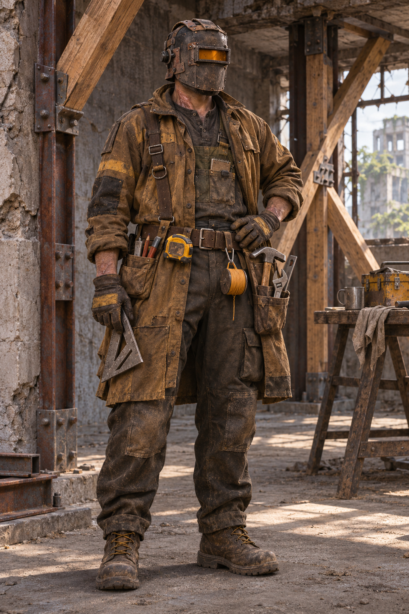

Depois que edifícios e abrigos improvisados começaram a ceder, Viga passou a observar rachaduras, apoios e entradas antes que as pessoas se instalassem.
PROPOSTA DE LORE // EM REVISÃO
VIGA.
Viga avalia estruturas, reforça entradas e transforma construções instáveis em abrigos mais seguros. A máscara de solda protege o rosto marcado por queimaduras e pode ser levantada na base.
ABRIR ARQUIVO FOTOGRÁFICO →
Este dossiê apresenta uma proposta revisável com base no conceito visual e na função do personagem. Idade, nome civil, datas e vínculos pessoais ficam em aberto quando ainda não foram definidos.
O que a extinção
deixou nele.
Os registros abaixo organizam sua função e sua trajetória em linhas gerais. As cenas específicas continuam abertas à revisão.
As queimaduras no rosto vieram de um trabalho de campo em uma estrutura danificada. Desde então, a máscara de solda reforçada tornou-se proteção e ferramenta de trabalho.
Viga ajuda a manter acessos e áreas comuns da base. É metódico, paciente e insiste que um abrigo deve oferecer segurança sem apagar a sensação de lar.
Fortificações e abrigos
- Reforço de entradas e passagens
- Leitura de estruturas danificadas
- Soldagem e reparos de abrigo
Cicatrizes de queimadura no rosto.
O que carrega
por dentro.
Metódico, sereno e paciente com quem está aprendendo. Viga gosta de explicar o motivo de cada reforço e acredita que cuidado também aparece na forma de um lugar.
“Um abrigo precisa proteger e ainda parecer um lugar para viver.”